第三周作业
背景
1.基于nexus3的yum私有仓库的实现
1.1 nexus3介绍
Nexus 是一个强大的maven仓库管理器，它极大地简化了本地内部仓库的维护和外部仓库的访问。
不仅如此，他还可以用来创建yum、pypi、npm、docker、nuget、rubygems 等各种私有仓库。
所支持的类型，可从下图管窥：

如果使用了公共的 Maven 仓库服务器，可以从 Maven 中央仓库下载所需要的构件（Artifact），但这通常不是一个好的做法。 正常做法是在本地架设一个 Maven 仓库服务器，即利用 Nexus 私服可以只在一个地方就能够完全控制访问和部署在你所维护仓库中的每个 Artifact。 Nexus 在代理远程仓库的同时维护本地仓库，以降低中央仓库的负荷, 节省外网带宽和时间，Nexus 私服就可以满足这样的需要。 Nexus 是一套 “开箱即用” 的系统不需要数据库，它使用文件系统加 Lucene 来组织数据。 Nexus 使用 ExtJS 来开发界面，利用 Restlet 来提供完整的 REST APIs，通过 m2eclipse 与 Eclipse 集成使用。 Nexus 支持 WebDAV 与 LDAP 安全身份认证。 Nexus 还提供了强大的仓库管理功能，构件搜索功能，它基于 REST，友好的 UI 是一个 extjs 的 REST 客户端，它占用较少的内存，基于简单文件系统而非数据库
1.2docker安装部署nexus3
创建docker挂载目录并添加权限
1 | |
下载docker并运行
1 | |
下载镜像并运行
1 | |
浏览器访问nexus
1 | |
初次进入需要登录账户名默认为admin 密码存储于/data/nexus/admin-password下
初次登录后需修改密码，密码可自行设置
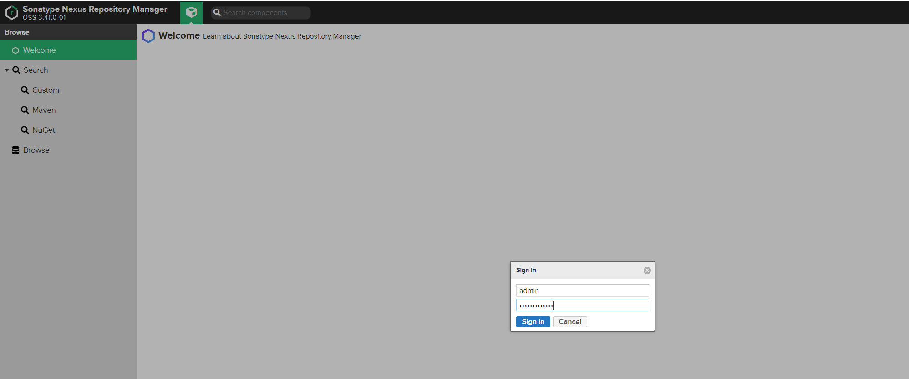
1.3 创建blob存储
为yum仓库创建一个单独的存储空间，命名为yum-hub
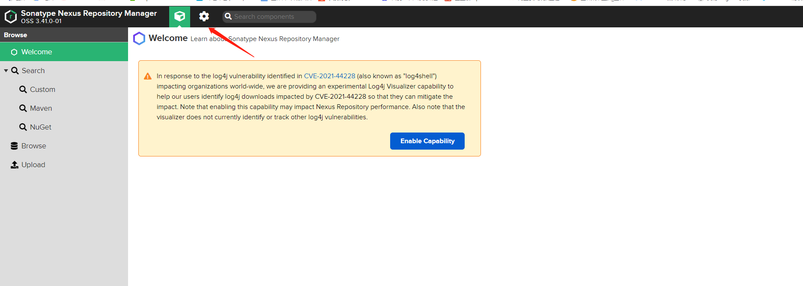
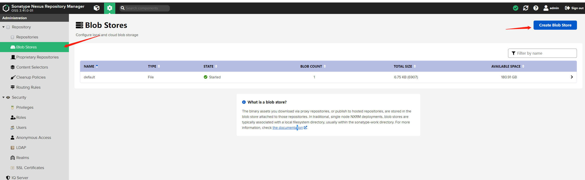
类型选择file 名字填写 yum-hub
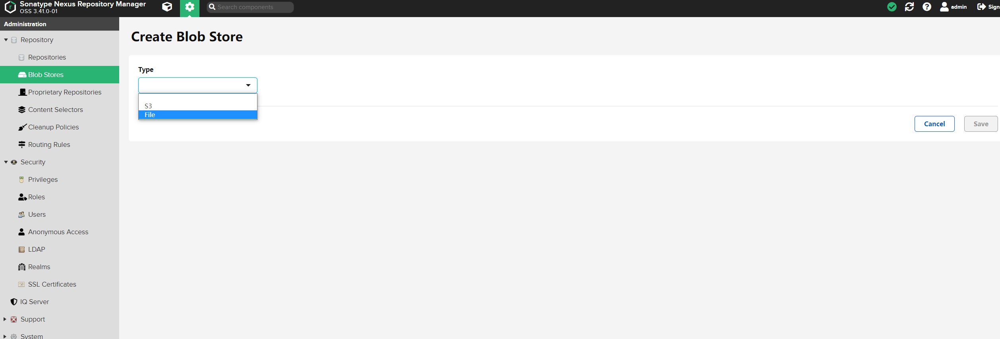
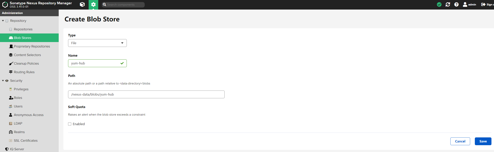
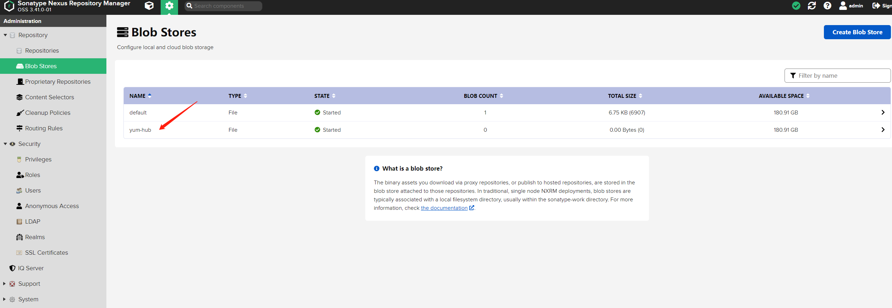
创建完成后可以看到yum-hub
1.4创建不同类型yum库
分别创建hosted，proxy，group三种类型的yum库
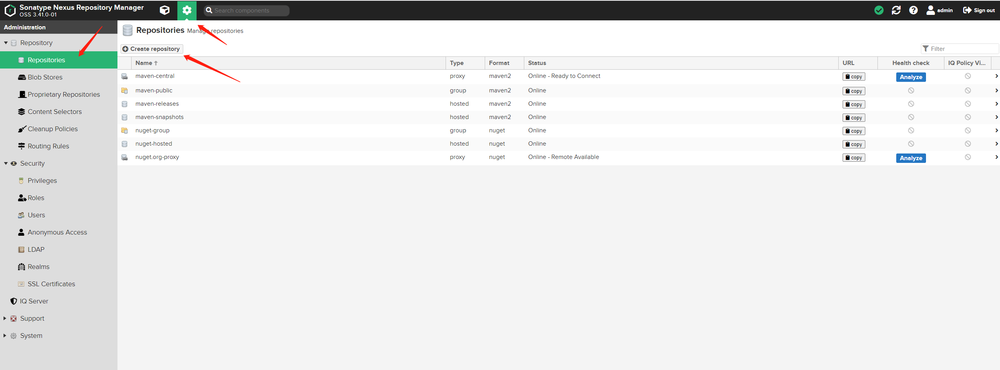
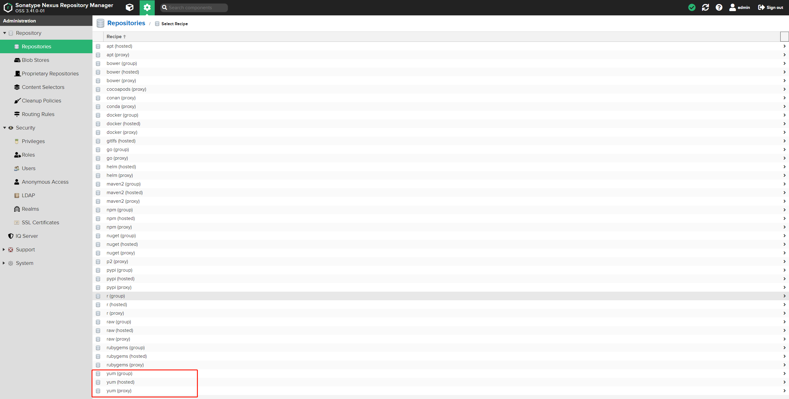
创建hosted类型的yum库
Name:：定义一个名称local-yumStorage：Blob store，我们下拉选择前面创建好的专用blob：yum-hub。Hosted：开发环境，我们运行重复发布，因此Delpoyment policy 我们选择Allow redeploy。这个很重要
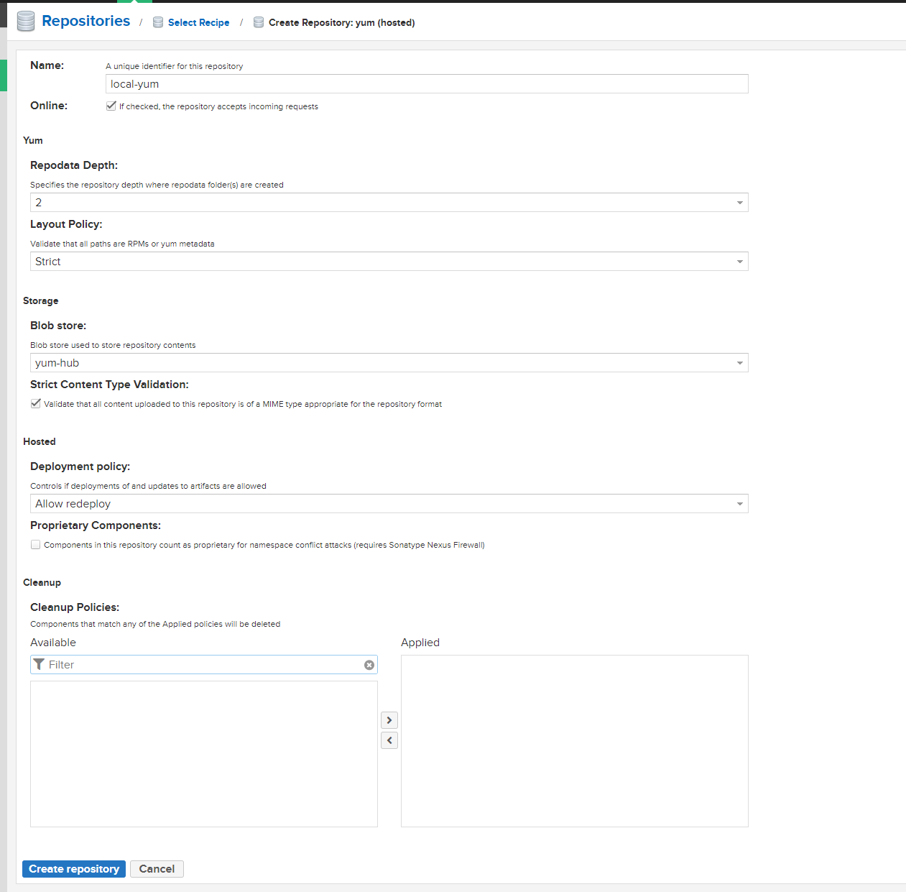
创建proxy类型的yum库
Name: proxy-163-yumProxy：Remote Storage: 远程仓库地址，这里填写: http://mirrors.163.com/centos/Storage: yum-hub
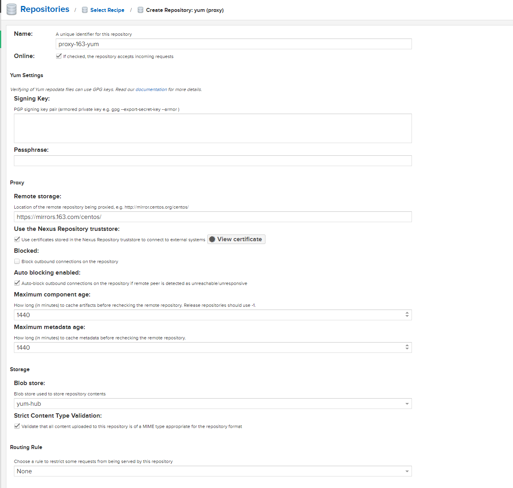
创建group类型的yum库
Name：group-yumStorage：选择专用的blob存储yum-hub。group: 将左边可选的2个仓库，添加到右边的members下
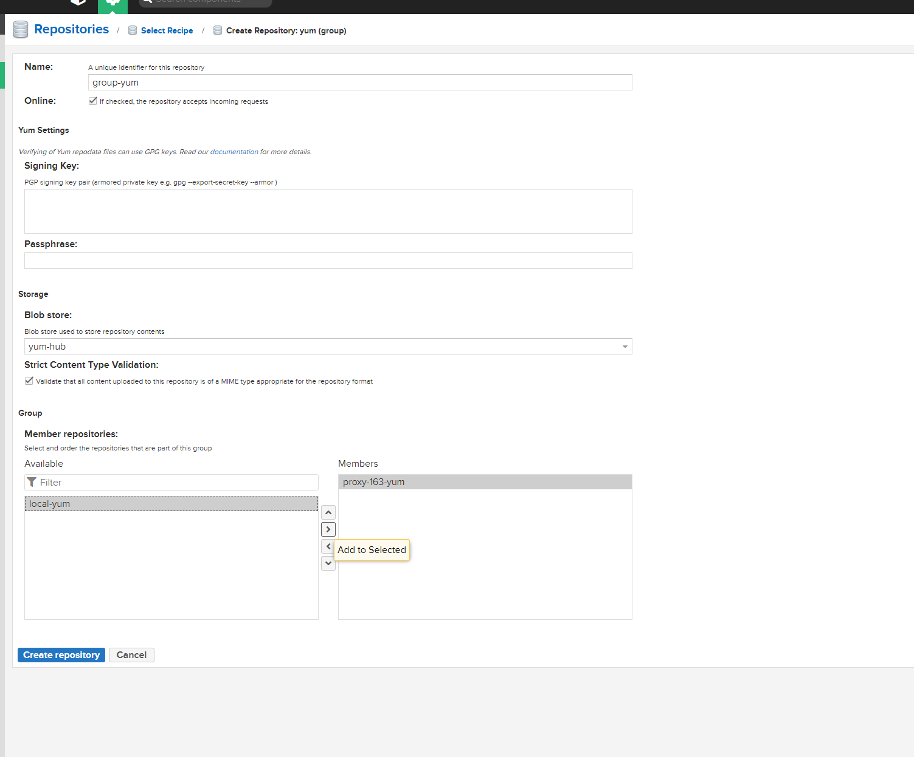
全部配置完成后去设置yum源
1.5构建本地yum缓存
将原有的yum源移走
1 | |
创建一个新的yum源，并添加下面的内容
1 | |
构建缓存，确认下group-yum下是否存在包
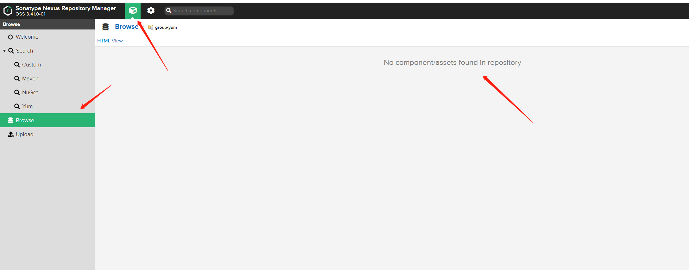
机器上执行操作，确认已经有数据了
1 | |
返回页面上查看也有数据存在了
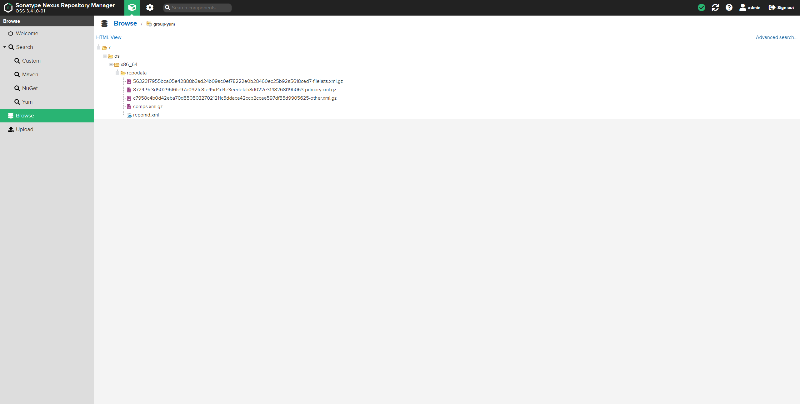
离线环境下载软件包测试，正常安装
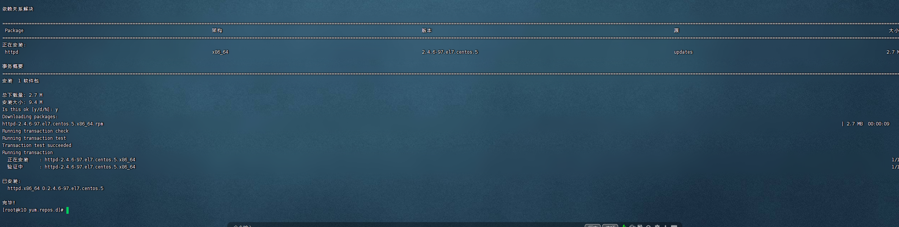
2.TCP协议和三次握手及四次挥手
2.1 三次握手
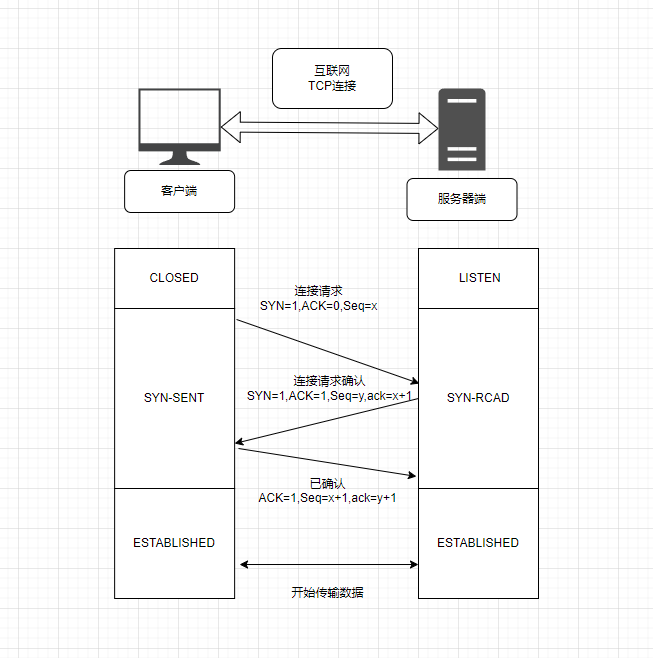
1 | |
第一次握手：客户端第一次发送一条连接请求数据，SYN = 1，ACK = 0就是代表建立连接请求，发送的具体数据第一个字节编号记为x，赋值seq。
第二次握手：服务端收到请求后，返回 客户端的SYN = 1,加上自己的确认号ACK=1,发送的具体数据第一个字节编号记为y，赋值seq，希望客户端下一次返回编号x + 1个字节为止的数据，记为ack = x + 1。
客户端得出客户端发送接收能力正常，服务端发送接收能力也都正常，但是此时服务器并不能确认客户端的接收能力是否正常
第三次握手：客户端收到服务端返回的请求确认后，再次发送数据，原封不动返回ACK = 1,这里就不需要再发送 SYN=1了，为什么呢？因为此时并不是跟服务端进行连接请求，而是连接确认，所以只需要返回ACK = 1代表确认，同样的，发送的具体数据第一个字节编号记为seq = x + 1，希望服务端下次传输的数据第一个字节编号记为ack = y + 1
为什么TCP建立连接时候，要进行3次握手，2次不行吗？
一句话的答案：主要目的:防止server端一直等待，浪费资源，
如果建立连接只需要2次握手，可能会出现的情况
假设client发出的第一个连接请求报文段，因为网络延迟，在连接释放以后的某个时间才到达server 。
本来这是一个早已失效的连接请求，但server收到此失效的请求后，误认为是client再次发出的一个新的连接请求 。
于是server就向client发出确认报文段，同意建立连接。
如果不采用“3次握手”，那么只要server发出确认，新的连接就建立了 。
由于现在client并没有真正想连接服务器的意愿，因此不会理睬server的确认，也不会向server发送数据 。
但server却以为新的连接已经建立，并一直等待client发来数据，这样，server的很多资源就白白浪费掉了
采用“三次握手”的办法可以防止上述现象发生 ，例如上述情况，client没有向server的确认发出确认，server由于收不到确认，就知道client并没有要求建立连接。
2.2四次挥手
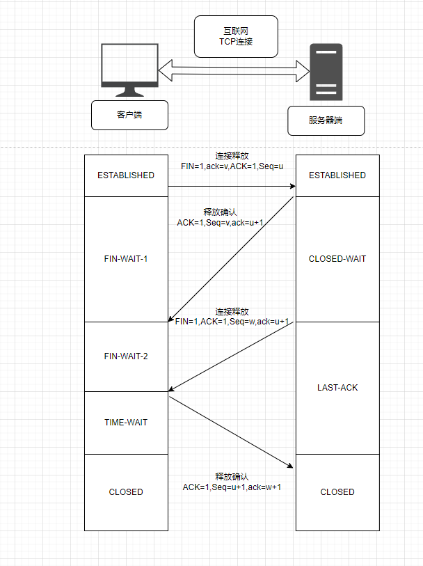
第一次挥手：Client发送一个FIN，用来关闭Client到Server的数据传送，Client进入FIN_WAIT_1状态。
第二次挥手：Server收到FIN后，发送一个ACK给Client，确认序号为收到序号+1（与SYN相同，一个FIN占用一个序号），Server进入CLOSE_WAIT状态。
第三次挥手：Server发送一个FIN，用来关闭Server到Client的数据传送，Server进入LAST_ACK状态。
第四次挥手：Client收到FIN后，Client进入TIME_WAIT状态，接着发送一个ACK给Server，确认序号为收到序号+1，Server进入CLOSED状态，完成四次挥手
为什么建立连接是三次握手，关闭连接确是四次挥手呢？
建立连接的时候， 服务器在LISTEN状态下，收到建立连接请求的SYN报文后，把ACK和SYN放在一个报文里发送给客户端。
而关闭连接时，服务器收到对方的FIN报文时，仅仅表示对方不再发送数据了但是还能接收数据，而自己也未必全部数据都发送给对方了，所以己方可以立即关闭，也可以发送一些数据给对方后，再发送FIN报文给对方来表示同意现在关闭连接，因此，己方ACK和FIN一般都会分开发送，从而导致多了一次。为了确保正确关闭连接，所以需要四次。
TIME_WAIT状态有什么作用，为什么主动关闭方没有直接进入CLOSED状态释放资源？
答：防止连接关闭时四次挥手中的最后一次ACK丢失：如果主动关闭方进入CLOSED状态后，被动关闭方发送FIN包后没有得到ACK确认，超时后就会重传一个FIN包。如果客户端没有TIME_WAIT状态而直接进入CLOSED状态释放资源，下次启动新的客户端就可能使用了与之前客户端相同的地址信息，有两个危害，第一种是这个刚启动的新的客户端绑定地址成功时，就会收到了一个重传的FIN包，对新连接就会造成影响。第二种是如果该新客户端向相同的服务端发送SYN连接请求，但是此时服务端处于LAST_ACK状态，要求收到的是ACK而不是SYN，因此就会发送RST重新建立请求。
为什么TIME_WAIT状态需要经过2MSL才能进入CLOSE状态?
答：MSL指的是报文在网络中最大生存时间。在客户端发送对服务端的FIN确认包ACK后，这个ACK包有可能到达不了，服务器端如果接收不到ACK包就会重新发送FIN包。所以客户端发送ACK后需要留出2MSL时间（ACK到达服务器器+服务器发送FIN重传包，一来一回）等待确认服务器端缺失收到了ACK包。也就是说客户端如果等待2MSL时间也没收到服务器端重传的FIN包，则就可以确认服务器已经收到客户端发送的ACK包
这周有点忙，剩余的作业后面的会补全！
本博客所有文章除特别声明外，均采用 CC BY-SA 4.0 协议 ，转载请注明出处！